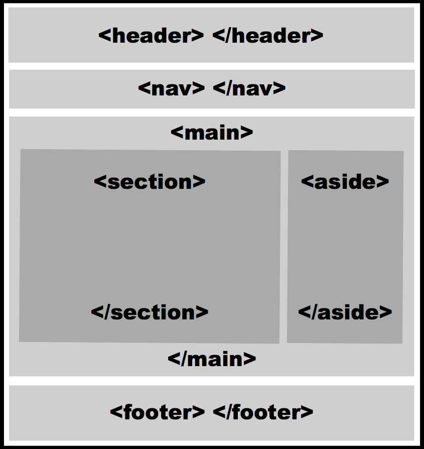
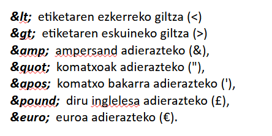
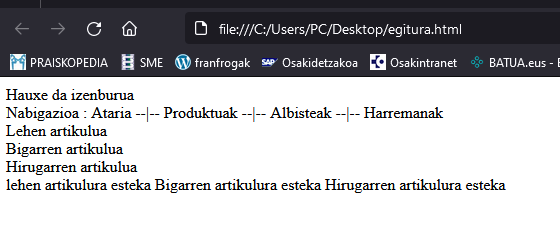
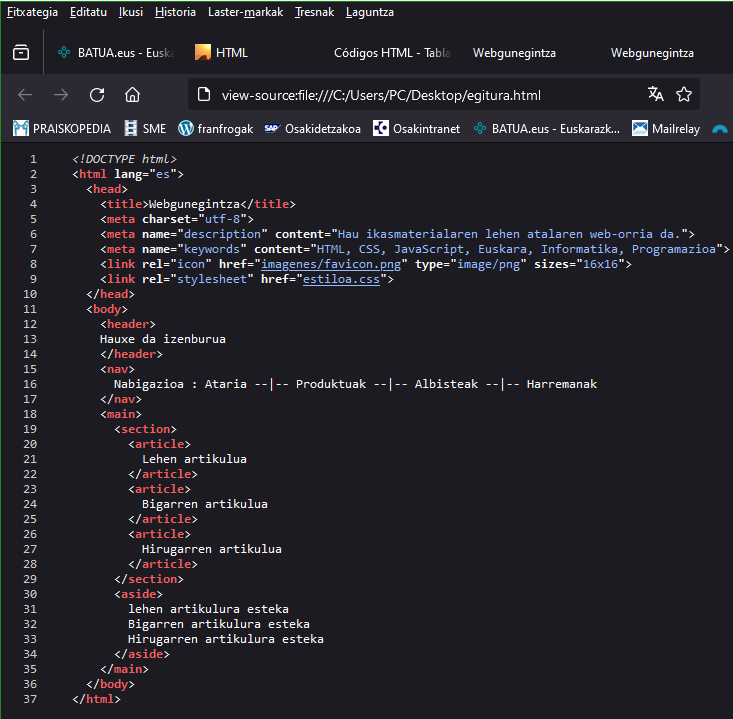

Dokumentuaren gorputza. <body>...</body>
Egitura hori arduratzen da gure webgunearen ageriko zatia sortzeaz.
HTMLk beti eskaini ditu informazioa eraikitzeko eta antolatzeko modu desberdinak dokumentuaren
gorputzean.
Lehenengo elementuetako bat <table></table> (taula) izan zen. CSS iritsi zen arte.
CSSrekin,
garatzaileak elementu malguago bat <div></div> (zatiketa) elementua ezartzen hasi
ziren.
Baina <div></div> elementuak ere ez du edukia zehazten,
<div></div>
elementuan denetik sar daiteke irudi, menu, testu, esteka, kode edota formulario mota guztiak.
Horregatik sartu zituen HTML5ek izen deskribatzaileagoak dituzten elementu berriak dokumentuaren zati
bakoitza
identifikatzeko. Hona hemen:
<div>—Banaketa generikoa definitzen du. Beste elementurik aplikatu ezin
denean
erabiltzen da.
<main>—Dokumentuaren eduki nagusia jasotzen du (orriaren gai nagusia
adierazten
duen edukia).
<nav>—Nabigaziorako laguntza dauka, hala nola orriaren menu nagusia edo
webgunean
nabigatzeko beharrezko esteka-blokeak.
<section>—Atal generiko bat definitzen du. Maiz erabiltzen da eduki
tematikoa
bereizteko, edo eduki nagusia antolatzen laguntzen duten zutabeak edo blokeak sortzeko.
<aside>—Eduki nagusiari buruzko informazioa du, baina ez da edukiaren
zati bat,
hala nola aurreko argitalpenei buruzko artikuluak edo estekak.
<article>—Artikulu independente bat irudikatzen du, hala nola foroko mezu
bat,
aldizkari bateko artikulua, blog bateko sarrera bat, iruzkin bat, etab.
<header>—Elementu honek gorputzaren goiburua edo gorputzaren barruko
sekzioak
definitzen ditu.
<footer>—Elementu honek gorputzaren oina edo gorputzaren barruko
sekzioena
definitzen du.
Web-orri baten atal espezifikoak irudikatzeko asmoz definitu dira elementu horiek. Malguak diren arren
eta
diseinuaren hainbat zatitan inplementatu daitezkeen arren, guztiek webgune gehienetan aurkitzen den eredu
bati
jarraitzen diote.

HTML-egitura(3): HTML5 egitura irudia, izen adierazgarriekin
Garatzaile bakoitzak bere diseinuak sortu arren, oro har, webgune guztiak deskribatu ahal izango
ditugu atal hauek kontuan hartuta.
<header>—</header> (Goiburua) Hemen kokatzen ditugu logoa,
gunearen
izena, azpitituluak eta gure webgunearen edo webgunearen deskribapen laburra.
<nav>—</nav> (Nabigazio-barra) Hemen garatzaile gehienek menu
bat edo
esteka-zerrenda bat eskaintzen dute gunean nabigatzeko.
<main>—</main> (Info principal) (Info nagusia) Orriaren eduki
garrantzitsua diseinuaren bitartekoa da, eta bertan artikuluak edo albisteak aurkitzen ditugu, baita
erlazionatutako dokumentuetarako estekak edo baliabideak ere.
Adibidean, atal hau bi zutabetan banatu da,
<section>—</section> informazio nagusia eta
<aside>—</aside> alboko barra, baina diseinatzaileek beren
beharretara
egokitzen dute, zutabe gehigarriak txertatuz edo zutabeak zatituz.
<footer>—</footer> (Orri-oina) Diseinu tradizional baten
behealdean
orri-oinean barra instituzional izenekoa aurkituko dugu. Horrela deitzen diogu, gune honetan
webguneari,
egileari, konpainiari, erabilera-arauetarako estekei, termino eta baldintzei, gunearen mapari eta
abarri
buruzko informazio orokorra erakusten dugulako.
Banan banan ikusiko ditugu:
<header></header>
Diseinu tradizional baten lehen elementua da <header>—</header> elementua
Ez dugu elementu hori<head>—</head> elementuarekin nahastu behar.
<header>—</header> elementua dokumentuaren gorputz barruko kidegorako edo ataletarako izenburu edo azpititulu gisa definitu da sarrerako informazioa emateko. Hurrengo adibidean, elementu hau erabiltzen da web orriaren izenburua definitzeko.
<!DOCTYPE html>
<html lang="es">
<head>
<title>Webgunegintza</title>
<meta charset="utf-8">
<meta name="description" content="Hau ikasmaterialaren lehen atalaren web-orria da.">
<meta name="keywords" content="HTML, CSS, JavaScript, Euskara">
<link rel="icon" href="imagenes/favicon.png" type="image/png" sizes="16x16">
<link rel="stylesheet" href="estiloa.css">
</head>
<body>
<header>
Hauxe da izenburua
</header>
</body>
</html>
<header>—</header> elementua txertatzeak dokumentuaren gorputzaren eta ageriko zatiaren hasiera adierazten du.
Hemendik aurrera, kodea exekutatzearen emaitza ikusi ahal izango dugu nabigatzailearen leihoan.
<nav></nav>
Gure adibidearen hurrengo atala nabigazio-barra da. Barra horrek nabigaziorako laguntza ematen duen atal bat definitzen du, eta <nav></nav> elementuarekin irudikatzen da.
<!DOCTYPE html>
<html lang="es">
<head>
<title>Webgunegintza</title>
<meta charset="utf-8">
<meta name="description" content="Hau ikasmaterialaren lehen atalaren web-orria da.">
<meta name="keywords" content="HTML, CSS, JavaScript, Euskara">
<link rel="icon" href="imagenes/favicon.png" type="image/png" sizes="16x16">
<link rel="stylesheet" href="estiloa.css">
</head>
<body>
<header>
Hauxe da izenburua
</header>
<nav> Nabigazioa: Ataria Produktuak Albisteak Harremanak </nav>
</body>
</html>
Ezartzea erabakitzen dugun egitura eta ordena gure webguneak edo aplikazioak eskatzen duenaren araberakoa da.
HTML elementuak nahiko malguak dira eta lan egiteko parametro jakin batzuk baino ez dizkigute ematen, baina horiek erabiltzeko modua gure esku dago.
Aldakortasun horren adibide bat da <nav></nav> elementua <header>—</header> etiketen artean edo gorputzaren barruan beste atal batean txerta daitekeela.
Hala ere, beti hartu behar dugu kontuan elementu horiek nabigatzaileari informazio gehigarria eskaintzeko sortu direla, eta programa eta gailu berri bakoitzari dokumentuaren zati garrantzitsuak identifikatzen laguntzea komeni dela.
Gure HTML kodea eramangarri eta irakurgarri mantendu nahi badugu, hobe da elementu horientzat ezarritako estandarrei jarraitzea. <nav></nav> elementua nabigaziori laguntzeko sortu da, hala nola menu nagusia edo esteka garrantzitsuen blokeak jasotzeko, eta helburu horiek betetzeko erabili beharko genuke.
<main></main>
<section></section>
<article></article>
<aside></aside>
Goiko elementu horiek web-orriaren gorputzaren barruan, <body></body> elementuaren barruan, alegia, dokumentuaren eduki nagusia antolatzeko sortuak izan dira.
Gure diseinuan, elementu horiek Informazio nagusia eta Alboko zutabea izeneko atalak irudikatzen dituzte.
Informazio nagusiari eskainitako atala zabalagoa denez, haren edukia, oro har, <section></section> eta <article></article>, elementuez zatikatua adierazten da, diseinuaren arabera, eta informazio motaren arabera.
<aside></aside> elementua orrialdearen alboetara kokatu ohi da, orriaren informazioa deskribatzeko. Ez da egituraren atal bat beraz, diseinuaren edozein tokitan koka daiteke eta, duen edukia orriaren aduki nagusi gisa hartzen ez den bitartean nahieran erabil daiteke.
Ia beti bi elementu horiek aski izan ohi dira eduki nagusia pantailaratzeko, baina dokumentuaren beste tokietan erabil daitezkeenez, <main></main> elementua sortu da haiek guztiak batu ahal izateko.
<!DOCTYPE html>
<html lang="es">
<head>
<title>Webgunegintza</title>
<meta charset="utf-8">
<meta name="description" content="Hau ikasmaterialaren lehen atalaren web-orria da.">
<meta name="keywords" content="HTML, CSS, JavaScript, Euskara">
<link rel="icon" href="imagenes/favicon.png" type="image/png" sizes="16x16">
<link rel="stylesheet" href="estiloa.css">
</head>
<body>
<header>
Hauxe da izenburua
</header>
<nav> Nabigazioa : Ataria Produktuak Albisteak Harremanak </nav>
<main>
<section>
<article>
Lehen artikulua
</article>
<article>
Bigarren artikulua
</article>
<article>
Hirugarren artikulua
</article>
</section>
<aside>
lehen artikulura esteka
Bigarren artikulura esteka
Hirugarren artikulura esteka
</aside>
</main>
</body>
</html>
GARRANTZITSUA: dokumentuaren <section> bakoitza ordezkatzen duten elementuak goitik beherako zerrenda batean agertzen dira adibidean baina web-orrietan bata bestearen alboan ikusi ohi ditugu. HTML hori dagoen moduak argitaratuko bagenua artikuluak bata besteare azpian agertuko dira. Hori horrela da HTML5ak CSSren esku uzten duelako.
Goiko diseinu hori ohikoa da webgintzan, berak ordezkatzen du gaur egun webgune gehienek erabiltzen duten oinarrizko egitura.
Egunkariek artikuluak bezala web-orriek ere infomazioa antzeko ezaugarriak partekatzen dituzten sailetan banatuta erakutsi ohi dute.
<article>—</article> elementuak horietako atal bakoitza identifikatu ohi du. Goiko adibidean argi asko ikusten da gure artikuluak sail nagusian kokaturik daudela.
<footer></footer>
Dagoeneko prest dauzkagu dokumentuaren goiburua eta gorputza. Bertan antolatu ditugu hainbat sail nabigazioarentzat eta eduki nagusiarentzat eta baita zeharkako informazioarentzat orrialdearen alboan tokitxo bat. Azken lana izango da diseinua ixtea eta orrialdearen oina prestatu.
Hori egiteko HTML5ak <footer></footer> elementua eskaintzen digu.
<!DOCTYPE html>
<html lang="es">
<head>
<title>Webgunegintza</title>
<meta charset="utf-8">
<meta name="description" content="Hau ikasmaterialaren lehen atalaren web-orria da.">
<meta name="keywords" content="HTML, CSS, JavaScript, Euskara">
<link rel="icon" href="imagenes/favicon.png" type="image/png" sizes="16x16">
<link rel="stylesheet" href="estiloa.css">
</head>
<body>
<header>
Hauxe da izenburua
</header>
<nav> Nabigazioa: Ataria Produktuak Albisteak Harremanak
</nav>
<main>
<section>
<article>
Lehen artikulua
</article>
<article>
Bigarren artikulua
</article>
<article>
Hirugarren artikulua
</article>
</section>
<aside>
lehen artikulura esteka
Bigarren artikulura esteka
Hirugarren artikulura esteka
</aside>
</main>
<footer>
© egile eskubideak
</footer>
</body>
</html>
Web-diseinu tradizional batean, Barra instituzionala atala <footer>elementuarekin definitzen da. Izan ere, atalak gure dokumentuaren amaiera (edo oina) irudikatzen du, eta proiektuaren atzean dagoen gunearen edo konpainiaren egileari buruzko informazio orokorra partekatzeko erabiltzen da, hala nola egile-eskubideak, baldintzak eta abar.
<footer> elementua dokumentuaren amaiera irudikatzeko erabiltzen da, eta aipatutako helburu nagusia du; hala ere, elementu hori eta <header> elementua gorputzaren barruan ere erabil daitezke atal baten hasiera eta amaiera irudikatzeko.
Oinarrizkoa: goiko adibidean © karaktere-katea du dokumentuaren oinean. Hala ere, dokumentua kargatzen denean, nabigatzaileak karaktereen ordez egile-eskubideak jartzen ditu (©). Karaktere-kate horiei entitate (character entities) deitzen zaie, eta teklatuan ez dauden edo HTMLn esanahi berezia duten karaktere bereziak irudikatzen dituzte, hala nola:
Egile-eskubideen karakterea (©),
Marka erregistratuarena (®)
HTML parentesi angeluarrak elementuak definitzeko (< eta >).
Zure testuetan karaktere hauetako bat sartu behar duzunean, entitatea idatzi behar duzu haren ordez. Adibidez:

HTML-egitura(4): Karaktere berezi batzuk
Karaktere berezi guztiak HTML5ean nola idazten diren jakiteko begiratu web-orri hau: HTMLren Kode Taula
Atal hau bukatzeko egin ezazu froga bat:
Ireki ohar-koadernoa eta idatzi bertan goiko kodea.
Gorde fitxategia .html luzapenarekin. (adibidez: egitura.html)
Ireki fitxategia zure nabigatzailearekin.
Aztertu emaitza. Ea nirea bezalakoa atera zaizun.

HTML-egitura(5): Oinarrizko egitura nabigatzailean.
Goiko irudian daukazu 'egitura.html' fitxategiak nabigatzailean erakusten duena. Emaitza eskasa iduri hainbeste lan egin ondoren, baina bada zerbait. Pausoz pauso goaz egitura gauzatzen. Etorriko da garaia dotoretzeko CSSrekin.
Beheko irudia nabigatzailean gaudela xaguaren eskuineko botoiari sakatu, eta bistaratzen den zerrendatik 'Ikusi orriaren iturburua' hautatzean agertzen zaiguna da. Bertan daukazue goikoa lortzeko idatzi dugun kodea.

HTML-egitura(6): Oinarrizko egitura HTML kodea